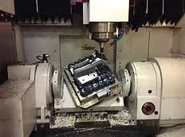
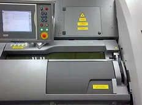
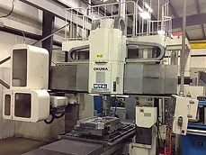
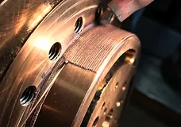
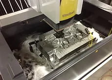

Welcome to B&J Specialty, Inc.
B&J Specialty, Inc. has been providing Mold, Die and Build to Print Tooling services that meet and exceed customers requirements and expectations for more than 45 years. You will find our commitment to customer service; work ethic and ability to get the job done are among the highest in our industry. We are constantly investing in new technology, new machinery, improved quality systems, such as our ISO 9001:2015 certification and continual employee training. All of this is done to ensure that B&J employees have the best capabilities to efficiently and successfully handle the complex needs of our customers.
Click Here To See The Full Equipment List5-Axis CNC Machining Services
Providing precision CNC machining services to a variety of customers including the automotive, toy, office furniture, firefighting, plumbing, and RV/trailer industries
3D Metal Printing Services
Providing 3D printing services utilizing the DMP “Direct Metal Printing” technology to create geometry that would normally be impossible using normal manufacturing methods.
Mold & Die Design, Fabrication & Repair Services
Providing complete design, fabrication, and repair services of dies and molds. Types include plastic injection, shuttle, single & multi-cavity, stack/tandem, & collapsible core molds. Progressive, hot stamp & transfer dies.
Reverse Engineering Services

Providing reverse engineering services through Blue Light & Laser Scanning. We have capabilities of 3D digitally scanning dies, molds, or castings. As well as archiving, troubleshoot tooling and work holding solutions.
Welding Services
Providing precision welding services on alloys such as beryllium copper, aluminum and copper and tool steels such as DC-53, A2, H-13, S-7 and M2, using the most cutting edge welding technology on the market today.
Wire & Ram EDM Services
Providing precision EDM services for our customers with complex machined components at very competitive prices. We utilize 4-axis wire EDM and ram EDM equipment with hole popping capabilities.
Some of Our Customer Reviews:
"Thank you for your time, patience and helpfulness! Our customer was very impressed with your operation and technical support.
You should be proud of your operation and we look forward to a continued partnership with B&J Specialty, Inc."
Brad Murphy - B&B Molders LLC
"We discovered B&J Specialty a few years ago and they immediately became our white light source for all applications. The accuracy
of the scanning and the care that the folks at B&J take on our products has far surpassed any other source we have used."
Jim Middleton - Superior Die, Tool & Machine Co.
"We could not be any happier with the welding performed by B&J Specialty. It is of the highest quality and they have an extremely
quick turnaround."
Doug Allen - Plastech Molding & Design, Inc.